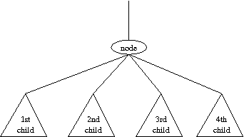

| Topic: | Tree Grafting 1 |
| Live Archive Ref#: | 3821 |
|
Pre-lab Due: |
Thursday March 21 by the start of class |
| Submission Deadline: | Sunday, March 24, by 11:59pm |
|
Techniques: |
Recursion, Tree traversals |
Read the complete problem description and then determine what the expected output should be if given the following input:
| Prelab input: | Prelab output: |
|
dddududuuu dduudduduu duddduduuu # |
Trees have many applications in computer science. Perhaps the most commonly used trees are rooted binary trees, but there are other types of rooted trees that may be useful as well. One example is ordered trees, in which the subtrees for any given node are ordered. The number of children of each node is variable, and there is no limit on the number. Formally, an ordered tree consists of a finite set of nodes T such that
Here is an example of such a tree, with three subtrees of the root.
0
/ | \
1 2 3
/ \
4 5
You are asked to write a program that computes the height of the tree.
The input is given by a number of lines giving the directions taken in a depth-first traversal of the trees. There is one line for each tree. For example, the tree above would give dudduduudu, meaning 0 down to 1, 1 up to 0, 0 down to 2, etc. The input is terminated by a line whose first character is #. You may assume that each tree has at least 2 and no more than 10000 nodes.
For each tree, print the heights of the tree. Use the format:
where t is the case number (starting from 1), and h is the height of the tree.Tree t: h
| Example input: | Example output: |
|
dudduduudu ddddduuuuu dddduduuuu dddduuduuu # |
Tree 1: 2 Tree 2: 5 Tree 3: 4 Tree 4: 4 |
Please submit on ZyLabs.
Although this problem can be trivially solved by keeping count of the depth as you parse the input, this lab is really a warmup for next week's lab (which was the real contest problem). For that reason, I recommend that you consider intentionally approaching this lab with the following recursive approach. In the end we want a function that can compute the depth of the entire tree; we will design a recursion that computes the depth of any subtree. Consider the following local view:
If you were told the depths for each of the four children, can you compute the depth of the larger subtree?
Here is how we recommend setting up the recursion. Remember that the original input is just a sequence of 'd' and 'u' designators to describe the shape of the tree. We want to think about starting the recursion at the root. Technically, there is no 'd'/'u' pair in the input for going down to the root up up from it, but for consistency sake, we recommend that you alter the original input string by adding a preceding 'd' and a trailing 'u'. Then use a string iterator to implicitly traverse the tree as you do your computation. Use the following signature.
/* * Return the depth of the subtree rooted at the iterator position in the * input string and advance the iterator so that it ends up at the character * just beyond the 'u' that ended the subtree traversal */ int depth(string::iterator& i);Assume that the function is called at a time when the iterator is pointing to the initial 'd' that moves down to a node. This call is supposed to compute the depth of the subtree at that node, and while doing so it should advance the iterator so that it is one spot past the final 'u' that designates moving back up from the given node (note that we pass the iterator as a non-const reference so that the caller will continue scanning after the characters that we've processed).
As an example, consider the original input, dudduduudu. After
our recommended padding, we would have the string
ddudduduuduu. The top level
recursion would be called with the iterator in position as:
ddudduduuduu
and the goal would be that at the end of that call it returns value 2
and leaves the iterator at the end position,
ddudduduuduu
Of course, if you would like to understand how the recursion works,
the top level call would eventually have made three different
recursive calls (although its not clear at the onset how many calls
will be needed). The first of those calls would be portrayed as
ddudduduuduu
and that call would end having returned 0 to reflect the depth of the
rather trivial subtree it analyzed, leaving the iterator as
ddudduduuduu
just beyond the portion of the string that represented the trivial
subtree (shown in bold). The second recursive call starts in that
state, and will eventually return 1 after analyzing the portion of the
string shown in bold below, with the final iteration position advanced:
ddudduduuduu
A third recursive call would process the third subtree of the original
root, return 0 and leaving the iterator as follows:
ddudduduuduu
At this point, the recursion can recognize that there are no more
children of the original root, and can return value of 2 as the depth
(given that we witnessed subtrees having depths 0, 1, and 0 respectively).